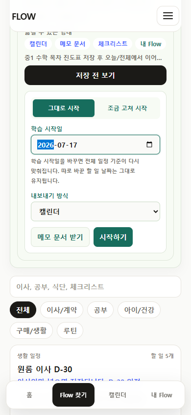
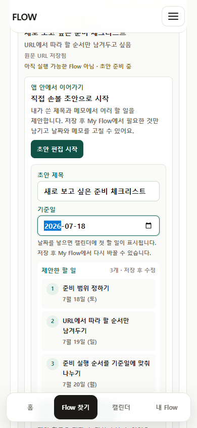
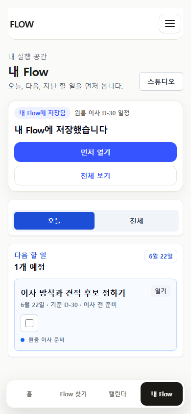
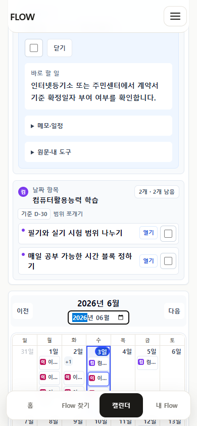
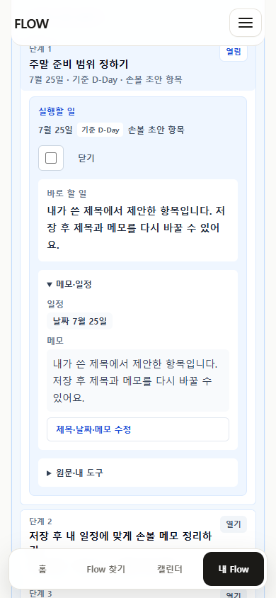
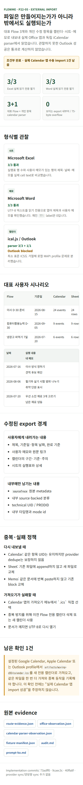

Home은 “URL 또는 메모를 넣는 곳”으로 시작한다
FlowMe의 첫 화면은 카탈로그보다 변환 작업대에 가까워야 합니다. 사용자가 이미 본 블로그, 유튜브, 공식 안내, 개인 메모를 붙여넣으면 어떤 실행 결과가 나오는지 먼저 보여주는 구조가 맞습니다.
FlowMe integrated UX storyboard · 2026-07-11
이 보드는 실제 UI 구현안이 아니라 방향 검토용 와이어플로우입니다.
현재 앱의 Home, /flows, My Flow, Calendar, Step detail, export 증거와 Claude Design 산출물을 바탕으로
URL 입력과 메모 입력을 하나의 진입 경험으로 묶고, 사용자가 자기 도구나 My Flow에서 바로 실행하는 전체 흐름을 재구성했습니다.
FlowMe의 첫 화면은 카탈로그보다 변환 작업대에 가까워야 합니다. 사용자가 이미 본 블로그, 유튜브, 공식 안내, 개인 메모를 붙여넣으면 어떤 실행 결과가 나오는지 먼저 보여주는 구조가 맞습니다.
URL hit은 “그대로 시작”과 “조금 고쳐 시작”으로 이어집니다. needs_review와 miss는 실행 가능한 Flow처럼 보이면 안 되고, 중복 canonical URL 기준으로 후보 저장과 재조회 루프로 닫습니다.
메모에서 나온 초안도 시작일, 저장 이름, 포함/제외 Step, 내보내기 방식을 고른 뒤 My Flow와 export로 갑니다. 초안 생성 로직 구현은 별도 과제이고, 여기서는 사용 경험만 정리합니다.
추천 구조: Home에는 짧은 통합 입력 카드만 두고, /flows를 전체 변환 작업대로 둡니다.
카탈로그 탐색은 같은 화면의 보조 영역으로 남기되, 첫 행동은 “URL 붙여넣기” 또는 “메모 붙여넣기”가 되어야 합니다.
근거 문서는 제품 원칙, 서비스 구조, P21 final review package, longitudinal journey review, URL miss compression, execution/edit detail, external import evidence입니다.








화면의 주인공은 내부 객체명이 아니라 사용자의 재료와 결과물입니다. 사용자는 “URL 또는 메모”를 넣고, FlowMe는 “내가 시작할 실행 묶음”과 “내 도구로 옮길 파일/텍스트”를 돌려줍니다.
URL hit Flow와 sourceTrace는 원본으로 남깁니다. 사용자의 수정은 개인 사본에만 저장됩니다.
miss와 needs_review는 후보로 저장되지만 My Flow 실행이나 export를 제공하지 않습니다.
메모 초안은 출처 신뢰를 과장하지 않고 “내 메모에서 만든 초안”으로 표시합니다.
저장 이름, 시작일, Step 포함/제외, 완료 상태, 재생성 export는 개인 사본 기준입니다.
메모 흐름의 첫 MVP는 “정교한 자동 작성”이 아니라 “흩어진 계획 메모를 실행 가능한 초안으로 정리하고, 내 도구로 옮기기 쉽게 하는 경험”으로 보는 것이 안전합니다.
외부 콘텐츠와 내 메모를 일정, 할 일, 문서로 바꿉니다.
이사 D-30 준비를 내 일정에 맞춰 시작할 수 있습니다.
URL과 메모를 후보로 저장해두면 나중에 다시 조회할 수 있습니다.
완료, 미루기, 메모, 원문, 내보내기는 접힌 영역으로 분리합니다.
원본 출처는 유지하지만, 복사와 파일은 내가 고친 Step 기준입니다.
| 기준선 | 사용자가 이미 기대하는 것 | FlowMe가 맞춰야 할 UX |
|---|---|---|
| 메모장·기본 노트 | 빠르게 쓰고, 나중에 복사하고, 형식이 깨지지 않는 것. | 메모 입력은 로그인, 템플릿 선택, 긴 설정 없이 시작해야 합니다. Markdown과 일반 텍스트 복사는 필수입니다. |
| Obsidian | Markdown, 로컬 파일, 링크, 그래프, Canvas, 플러그인처럼 사용자가 자기 방식으로 소유하고 확장하는 경험. | FlowMe는 Obsidian을 대체하지 말고, 실행 가능한 Markdown과 source 링크를 내보내는 쪽이 맞습니다. |
| Todo 앱 | 빠른 capture, Today, upcoming, 필터, 반복, 체크 완료. | My Flow Today는 전체 구조보다 오늘 할 1~3개 Step을 먼저 보여줘야 합니다. |
| Calendar·Tasks | 날짜가 있는 일만 일정으로 보이고, 시간과 반복이 있으면 calendar item으로 옮겨지는 것. | 날짜가 없는 Step은 checklist/memo에 남기고, 날짜가 있는 Step만 Calendar와 ICS에 포함합니다. |
| Notion류 workspace | 문서, database, 날짜 속성, 페이지 연결이 한 공간에서 이어지는 것. | API 연동 없이도 TSV, Markdown, 체크리스트를 안정적으로 복사할 수 있어야 합니다. |
/flows의 통합 입력 카드 정보 구조 확정.이 보드는 실제 사용자 검증 결과가 아닙니다. 현재 구현 화면, 자동·브라우저 QA, Claude 산출물, 공식 제품 문서 기준선을 종합한 향후 방향 검토 자료입니다.